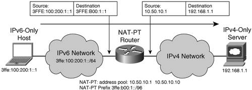

Translation Mechanisms (NAT-PT)Transition mechanisms reviewed so far enable end-to-end IPv6 connectivity. They are based on native IPv6 integration in a network, also called dual stack, or IPv6 encapsulation over IPv4 (manual or automatic tunnels). There is a potential scenario (third- and fourth-generation mobile phone networks, for instance) where IPv6-only devices need to communicate with IPv4-only nodes or resources. Such scenarios drive the need for translation mechanisms that enable communication between equipment that supports only one of the IP versions. Even when hosts can be migrated to a dual stack at the networking layer, some applications will remain IPv4 only, just because their implementation relies too much on IPv4 addresses, or a recompilation cannot be implemented. In such environments, you can use a different set of mechanisms, based on protocol translation rather than tunneling. These mechanisms include the following:
These mechanisms fall into two categories: those that have an impact on hosts, generally only on one end of the communication; and those that do not. BIS and SOCKS-based gateways belong to the first category, whereas TCP-UDP Relay and NAT-PT belong to the second. Cisco IOS software implements only NAT-PT because the other translation mechanisms are either not relevant to Cisco IOS software or they are not really deployed. For these reasons, this section focuses only on NAT-PT. NAT-PT enables IPv6-only hosts to communicate with IPv4-only hosts and applications. It is described in RFC 2766 and uses the IP translation mechanism referred as stateless IP/ICMP translation algorithm (SIIT), specified in RFC 2765. Tables 3-4 and 3-5 present header translation rules, from IPv4 to IPv6 and in reverse.
Any IPv4 option is ignored during the protocol-translation process. IPv4 fragmented packets are translated using the IPv6 fragment header. Most ICMPv4 control messages are discarded during translation, except echo requests and replies which are mapped into IPv6 with the proper code (128, 129). Error messages are translated whenever possible. The reverse translation is done pretty much the same way. The IPv4 checksum computation is performed after the header has been translated. The way addresses (source and destination) get translated is configuration controlled, or dynamic. In the simple case, explicit mapping is provided at the NAT-PT for both source and destination, in both directions. Like for NAT, NAT-PT operates in various modes: static, where one IPv4 address is used to communicate with the IPv4-only host; and dynamic, where a pool of addresses is available, and dynamically bound to active flows; and PAT (Port Address Translation), where a single IPv4 address is used, and a TCP/UDP port number serves as a discriminator. NAT-PT can also be used as the DNS application-level gateway (ALG) to translate the DNS transaction. The DNS query for an AAAA record gets translated into a query for an A record. Upon receiving a response with an IPv4 address, the NAT-PT builds an IPv6 address by prefixing it with the global NAT-PT prefix and sends the response to the IPv6 host. At the same time, it creates a dynamic entry for translating the destination. For the destination, when communication is initiated from the IPv6 host, the IPv6 destination can embed the IPv4 address. Figure 3-18 illustrates the case of dynamic NAT-PT using a pool of addresses. Figure 3-18. NAT-PTExample 3-31 presents the NAT-PT configuration of the router shown in Figure 3-18. Example 3-31. NAT-PT Router Configuration
NAT-PT involves many of the same issues as NAT, covered in depth in Chapter 1, "The Case for IPv6An Updated Perspective." These issues are also listed in draft-aoun-v6ops-natpt-deprecate (a work in progress in IETF). Whenever you have an alternative solution, you should favor it over NAT-PT. For instance, if there is any possibility to set up the hosts with dual-stack IPv4 and IPv6, other mechanisms (described in section "IPv6 Network Access") such as ISATAP or Teredo should be preferred. NAT-PT is not supported when an IPv6-only network is trying to communicate to another IPv6-only network via an IPv4 backbone or vice versa, because it would require a double translation. In such cases, tunneling mechanisms (described in the section "IPv6 over the Backbone") should be preferred. However, a gap exists between a technical alternative and its operational feasibility. This gap may be filled by NAT-PT during the transitioning period. Consider, for example, the case of IPv6-only devices that should communicate with a node connected to an IPv6 unsupported data link layer (for example, Token Ring). For economical reasons, it may be valuable to run NAT-PT between devices, while waiting for the host to be upgraded to its next generation (thus ridding it of Token Ring). You can integrate IPv6 into existing infrastructures in various ways. It is expected that dual-stack networks will become the standard approach, but various transition mechanisms are available today to lower the cost of the first steps toward IPv4 and IPv6 coexistence. This chapter has summarized those mechanisms to enable you to evaluate their use in different deployment scenarios as depicted in the second part of this book. |